← Index · ← Previous · Next →
Authors: Poorava Kumar Meena, Kuldeep Suthar
Type: theory · Category: quantum gases · PDF: https://arxiv.org/pdf/2607.29309v1
Analysis basis: full PDF text, analyzed in chunks
Topic relevance: 🔥 analog quantum simulation 4/5 · non-equilibrium dynamics 3/5 · driven-dissipative phase transition 2/5 · non-equilibrium universality 2/5 · Frenkel-Kontorova 1/5 · Keldysh / 2PI / non-Gaussian methods 1/5 · methods for driven-dissipative 1/5
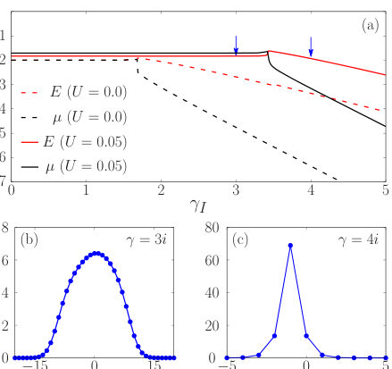
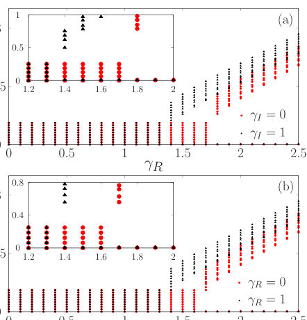
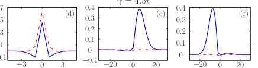
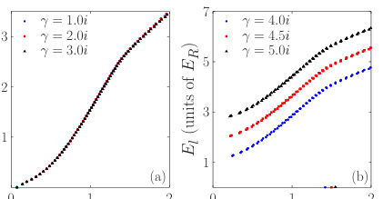
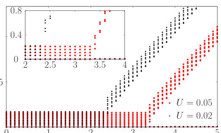
Summary. This paper theoretically examines the transition from a BEC to a soliton state in bosons trapped in an optical lattice subjected to density-dependent tunneling. Using Bogoliubov theory, the authors show that this transition alters the excitation spectrum, causing energy hardening and suppressing characteristic collective oscillations like breathing modes. This provides deep insight into how engineered gauge fields stabilize novel quantum phases.
Why it may be interesting. This work directly addresses non-trivial many-body physics in synthetic dimensions using ultracold atoms, providing quantitative predictions about quasiparticle behavior near quantum phase transitions driven by engineered gauge fields.
Main problem. The study investigates how low-lying quasiparticle modes evolve across a quantum phase transition from a Bose-Einstein condensate (BEC) to a localized soliton state induced by a density-dependent gauge field in optical lattices.
Main result. The transition causes an increase in dipole excitation energies and preserves the zero-energy mode in the soliton phase, while also suppressing characteristic dynamics like Bloch and breathing oscillations.
Method. The analysis employs discrete Bogoliubov theory applied to the nonlinear Schrödinger equation derived from a Bose-Hubbard model Hamiltonian.
Model / system. The system models ultracold bosons in a 1D optical lattice, governed by a Hamiltonian incorporating density-difference-dependent tunneling (DDT) and onsite interactions. The dynamics are analyzed using Bogoliubov theory on the resulting quadratic Hamiltonian.
Key observables. Quasiparticle mode energies/dispersion curves, mode energy gap ($\Delta E$), Bloch oscillations, breathing oscillations, and phase diagrams in the complex gauge field plane.
Important parameters / regimes. Density-dependent hopping parameter ($\gamma = \gamma_R + i\gamma_I$), onsite interaction strength ($U$), and lattice depth (related to $J$).
Assumptions / limitations. The analysis is restricted to the weakly-interacting limit, and higher-order terms in fluctuations are neglected.
Figures summary. Figures illustrate the evolution of quasiparticle mode energies across the transition, phase diagrams mapping stability regimes in the complex gauge field plane, and time evolution showing the suppression of Bloch and breathing oscillations in the soliton state.
Paper structure. The paper methodically develops the theoretical framework using Bogoliubov theory to analyze excitations. It then maps out quantum phases by varying the gauge field parameters ($\gamma$), detailing how the transition manifests in excitation spectra, dynamical properties (oscillations), and stability criteria.
Tunneling of ultracold bosons confined in a one-dimensional optical lattice results in a nontrivial gauge field depending on density-difference between the sites involved. The density dependent tunneling (DDT) causes a first-order quantum phase transition from the Bose-Einstein condensate to the localized soliton. Here, we examine the low-lying quasiparticle mode evolution across the transition in the weakly-interacting limit. To this end, we employ the discrete Bogoliubov theory and dispersion curves to reveal an increase in the quasiparticle energies of dipole (and higher) excitations with DDT in the soliton phase while preserving the zero-energy mode. This is due to the decrease in effective tunneling, resulting in a larger energy cost to move the soliton, and causes faster dipole oscillations. The repulsive on-site atomic interaction further shifts the critical gauge field of DDT to a larger value by stabilizing the lattice soliton. The latter is corroborated by a phase diagram in the complex gauge field plane and mode energy gap of quasiparticles. We further show that the soliton does not exhibit Bloch oscillations as the effective momentum becomes density-dependent and deforms its internal structure. The dynamical response of the trap quench does not excite the width of localized wave-packet, and the breathing oscillations are suppressed. The latter two dynamical properties of the condensate uniquely contrast the soliton state due to the density-dependent gauge field.
Authors: Kelly R. Patton, Daniel E. Sheehy
Type: theory · Category: quantum gases · PDF: https://arxiv.org/pdf/2607.29620v1
Analysis basis: full PDF text, analyzed in chunks
Topic relevance: 🔥 analog quantum simulation 4/5 · Keldysh / 2PI / non-Gaussian methods 3/5 · driven-dissipative phase transition 2/5 · Kondo & dissipative impurity 1/5 · methods for driven-dissipative 1/5 · non-equilibrium dynamics 1/5
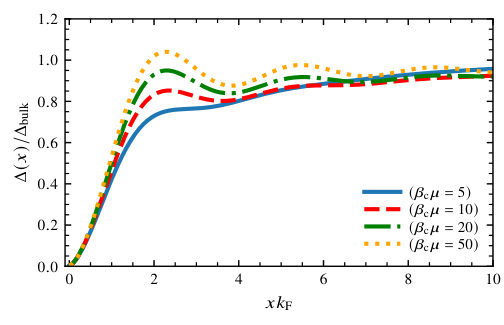
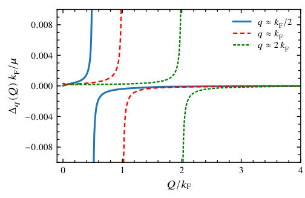
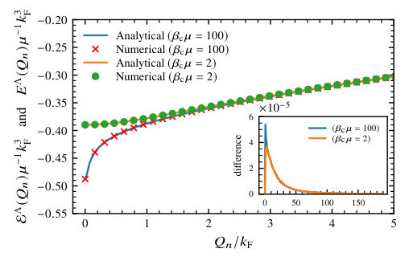
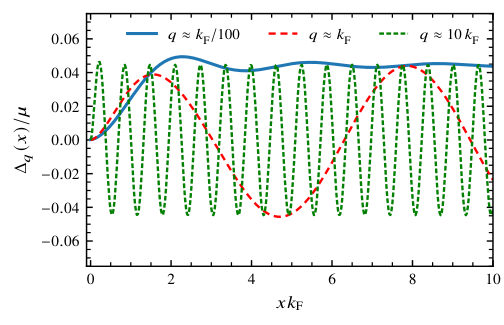
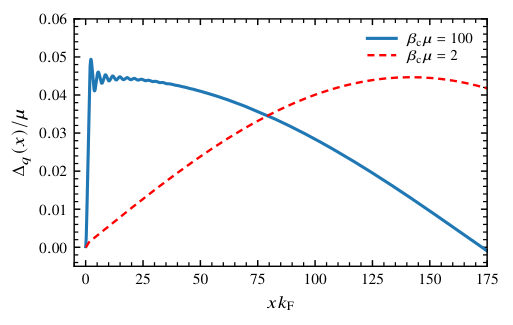
Summary. This paper theoretically examines Cooper pairing in fermionic superfluids confined within a box-shaped trap, focusing on the impact of boundaries during the BEC-BCS crossover. It finds that while weak coupling BCS theory predicts pronounced Friedel oscillations near the edge, these spatial modulations are suppressed as the system approaches the strongly interacting BEC limit.
Why it may be interesting. This work is highly relevant as it tackles non-trivial boundary physics in quantum many-body systems, providing quantitative predictions for how confinement modifies fundamental superfluid properties like pairing symmetry across a major crossover regime (BCS-BEC).
Main problem. The study investigates how system boundaries affect Cooper pairing and superfluid properties, specifically analyzing the local pairing amplitude near the edge of a box-shaped trap.
Main result. The local pairing exhibits Friedel-like oscillations in the weak coupling BCS regime, but these oscillations are suppressed as the interaction strength increases towards the BEC regime.
Method. The analysis uses integral equations derived from the pairing instability condition, solving for eigenfunctions using techniques involving Fourier transforms and renormalization to handle boundary effects.
Model / system. The system models attractively interacting fermions confined to a box-shaped trap, relevant to both cold fermionic atomic superfluids (SF) and electronic superconductors (SC). The theory addresses the BEC-BCS crossover in this spatially constrained geometry.
Key observables. Local pairing amplitude $\Delta(\mathbf{r})$, Friedel oscillations wavelength ($\sim 1/2k_F$), and the characteristic length scale $\xi$.
Important parameters / regimes. Coupling strength (varying from BCS to BEC), temperature relative to $T_c$, and the hard-wall boundary condition at the trap edge.
Assumptions / limitations. The analysis assumes a semi-infinite geometry with hard-wall boundary conditions at one edge, and it moves beyond simple approximations like LDA due to rapid potential variation near the boundary.
Figures summary. Figures illustrate the suppression of Friedel oscillations in $\Delta(x)$ as coupling increases (BCS to BEC), compare calculated eigenvalues to bulk values, and show representative eigenfunctions for different coupling regimes.
Paper structure. The paper progresses from defining the physical problem and Hamiltonian, deriving the linearized integral equation governing pairing instability at $T_c$, analyzing the resulting eigenfunctions in different coupling limits (BCS vs. BEC), and finally extending the theory to temperatures below $T_c$ using nonlinear Ginzburg-Landau terms.
We study pairing of attractively interacting fermions confined to a box-shaped trap. In contrast to the infinite translationally-invariant case, where the local pairing order is spatially uniform and undergoes the Bose-Einstein Condensate to Bardeen-Cooper-Schrieffer (BEC-BCS) crossover as interactions are varied, in this case the local pairing is expected to vary rapidly near the edge of the box. We address this problem in the limit of a semi-infinite superfluid, finding that the nature of the edge pairing depends sensitively on the coupling. The local pairing exhibits Friedel-like oscillations in the weak coupling BCS regime that are suppressed with increasing coupling strength towards the BEC regime.
Authors: Christian Haen, Julian Groß-Funk, Max Bergerhoff, Pascal Baumgart, Jonas Meiers, Tobias Bauer, Christoph Becher, Jürgen Eschner
Type: experiment · Category: quantum information and computing · PDF: https://arxiv.org/pdf/2607.29609v1
Analysis basis: full PDF text, analyzed in chunks
Topic relevance: 🔥 quantum optics experiment 4/5 · QC/QI experiment 3/5 · interference shaping light 3/5 · entanglement & information structure 1/5 · quantum measurements 1/5
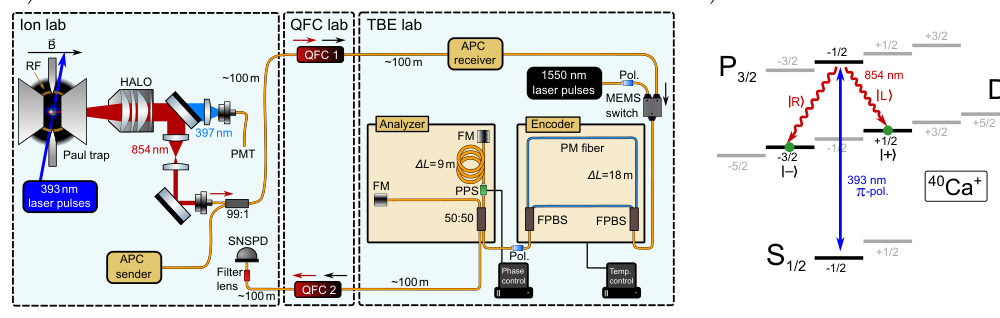
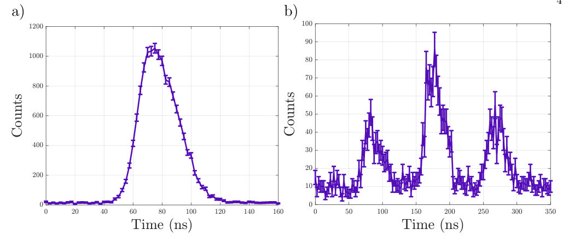
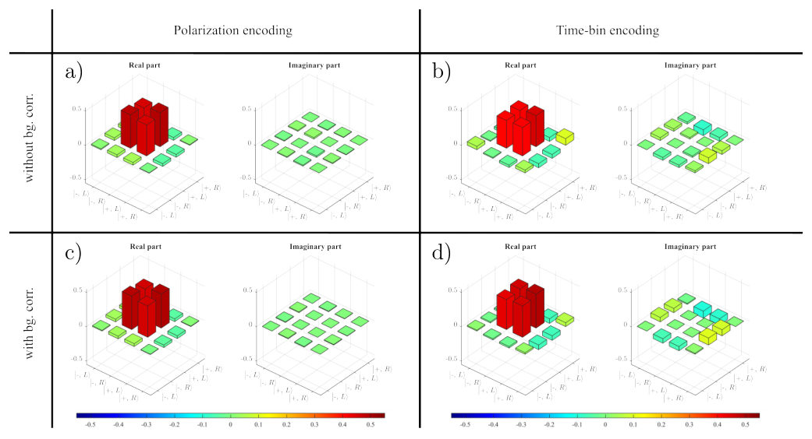
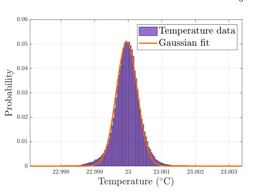
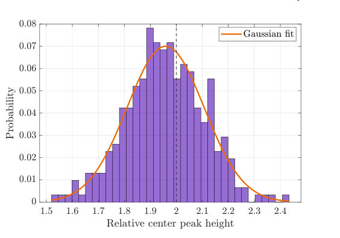
Summary. The paper presents an experimental demonstration of converting atom-photon entanglement from polarization encoding at 854 nm to time-bin encoding at the telecom C-band (1550 nm). This conversion is achieved via Quantum Frequency Conversion and a specialized fiber encoder. The success provides a vital, high-fidelity building block necessary for realizing complex, heterogeneous quantum network architectures.
Why it may be interesting. This work directly addresses a major engineering hurdle in quantum networking—interoperability between different physical platforms (e.g., atomic memories vs. fiber links) by providing a high-fidelity quantum interface.
Main problem. The core challenge is creating an interoperable interface for quantum networks by converting atom-photon entanglement from polarization encoding at atomic wavelengths to time-bin encoding in the telecom C-band.
Main result. The authors successfully demonstrated this conversion, preserving entanglement with high fidelity (96.3% reported), establishing a crucial building block for heterogeneous quantum networking architectures.
Method. The process involves generating polarization-entangled photons from a trapped ion, performing Quantum Frequency Conversion (QFC) to the telecom band, and finally using a fiber-based Mach–Zehnder-like encoder to map the qubit basis from polarization to time-bin.
Model / system. The system utilizes a single $^{40} ext{Ca}^+$ ion trapped in a Paul trap for entanglement generation. The photonic qubits are manipulated through QFC and then encoded into time-bins using an unbalanced Mach-Zehnder interferometer over optical fibers.
Key observables. Process fidelity (e.g., 96.3% reported), quantum state tomography results, and the measured photon wave-packets.
Important parameters / regimes. Atomic wavelength (854 nm) vs. Telecom C-band (1550 nm); time delay ($\sim 90$ ns) associated with the time-bin encoding path difference ($\Delta L \approx 18$ m).
Assumptions / limitations. The process assumes that time-bin qubits are more robust than polarization qubits over long fiber links, and fidelity losses are attributed to component inefficiencies.
Figures summary. Figures schematically illustrate the entire interface connecting components like Paul traps, QFCs, TBEs, and APC systems. Tomography figures show density matrices ($ ho$) for both encoding types alongside measured fidelities.
Paper structure. The paper details the experimental setup, starting with entanglement generation at an atomic wavelength, followed by quantum frequency conversion to the telecom band, and concluding with the polarization-to-time-bin conversion using a time-bin encoder. Stability analysis and fidelity verification are key components.
A key enabling feature of future quantum networks is interoperability between platforms that operate at different wavelengths and with different qubit encodings. We demonstrate an interface that converts atom-photon entanglement from polarization encoding at an atomic wavelength to time-bin encoding in the telecom C-band. Atom-entangled photons at 854 nm are generated from a single $^{40}$Ca$^+$ ion. After quantum frequency conversion to 1550 nm, the photonic polarization qubit is converted into a time-bin qubit using a fiber-based Mach--Zehnder-like encoder. Full quantum tomography of the final state verifies that the process preserves entanglement with 96.3(4.2)% fidelity. Together with the independent work of Ferrari et al. [arXiv:2607.07805 (2026)], this is the first demonstration of polarization-to-time-bin conversion of photons entangled with a single atomic quantum memory. The telecom-compatible interface enables robust qubit transmission over optical fibers and provides a key building block for heterogeneous quantum networking architectures.
Authors: Henry Bloss, TJ Hobbs, Navin McGinnis
Type: theory · Category: other · PDF: https://arxiv.org/pdf/2607.28724v1
Analysis basis: full PDF text, analyzed in chunks
Topic relevance: 🔥 entanglement & information structure 4/5 · non-equilibrium dynamics 2/5 · correlated / nonlocal dissipation 1/5 · driven-dissipative phase transition 1/5 · methods for driven-dissipative 1/5 · non-equilibrium universality 1/5 · quantum measurements 1/5
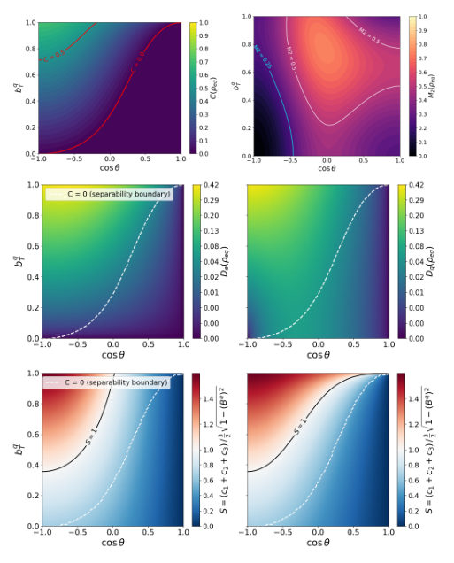
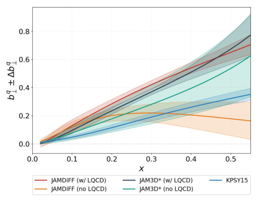
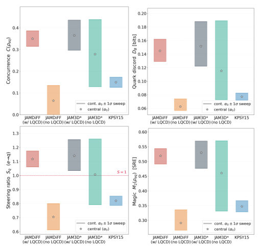
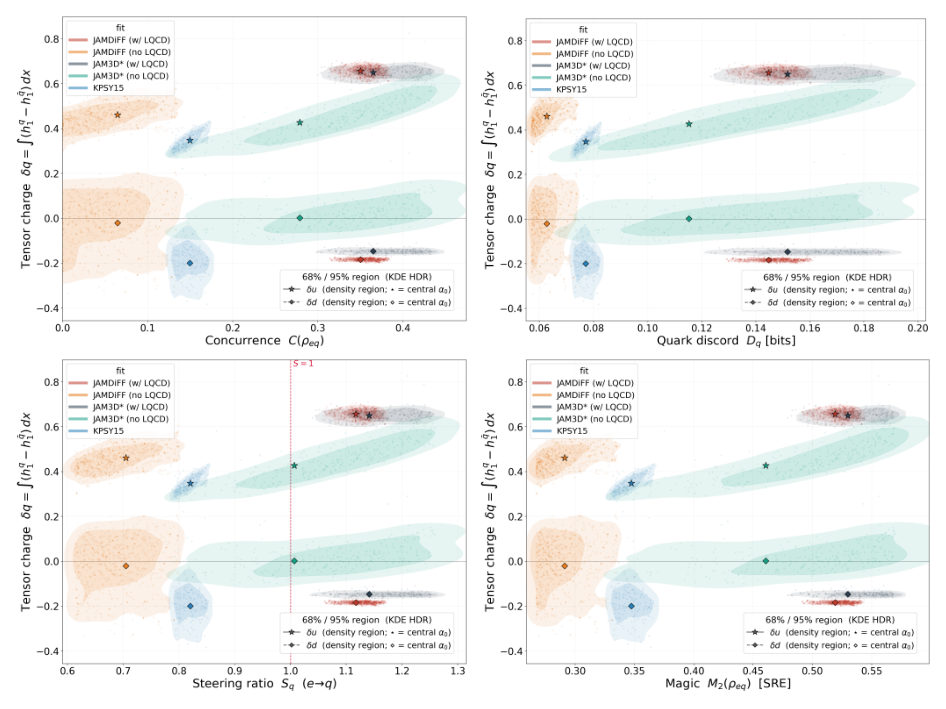
Summary. This theoretical work proposes that measuring various quantum correlations—such as entanglement and discord—in the final state of Deep-Inelastic Scattering can serve as a novel tool to map out the proton's internal structure. By analyzing these quantum measures, the authors constrain fundamental parameters like the quark tensor charges ($\delta u, \delta d$), providing testable predictions for future colliders like the EIC.
Why it may be interesting. While the core physics is high-energy particle physics, the methodology relies heavily on quantifying correlations in a bipartite quantum system using advanced quantum information measures (Discord, Steerability), which are central topics in open quantum systems theory.
Main problem. To use the hierarchy of quantum correlations generated during Deep-Inelastic Scattering (DIS) to probe the nonperturbative structure of the proton, specifically constraining its tensor charges.
Main result. Quantum information measures like discord and steerability provide a calculable mapping that constrains the allowed region in the $(\delta u, \delta d)$ plane for the proton's tensor charges.
Method. The analysis involves calculating the joint density matrix ($ ho_{eq}$) for the scattered electron and quark, then applying various quantum information measures (Concurrence, Discord, Magic, Steering) to this state.
Model / system. The physical system is modeled as an electron-proton scattering process ($e^- + p o e^- + q$), treating the final state as a bipartite qubit system. The formalism uses the density matrix derived from DIS amplitudes.
Key observables. Entanglement (Concurrence), Quantum Discord, Steering Measure, Magic measure, and the tensor charges ($\delta u, \delta d$).
Important parameters / regimes. Scattering angle ($\cos heta$), momentum transfer ($Q^2$), and the initial/final quark transverse polarization.
Assumptions / limitations. The analysis assumes that the measurement process allows for a mapping from quantum correlations to parton-level tensor charges, and in some derivations, it assumes leading-twist, massless limits or flavor averaging.
Figures summary. Figures illustrate how different quantum measures (Concurrence, Magic, Discord, Steering) vary with kinematics and how they constrain the allowed locus of $(\delta u, \delta d)$ values derived from various PDF models.
Paper structure. The paper first establishes the formalism for calculating the joint density matrix ($ ho_{eq}$) based on DIS amplitudes. It then introduces and analyzes four complementary quantum information measures (Entanglement, Discord, etc.) to show their sensitivity to quark polarization. Finally, it maps these measurements onto constraints on fundamental proton structure parameters like tensor charges.
We show that the hierarchy of quantum correlations produced in deep-inelastic scattering (DIS) can serve as a novel probe of the proton's nonperturbative structure. Specifically, we show that quantum entanglement, discord, steering, and magic provide nontrivial and complementary sensitivities to the nucleon's parton distribution functions (PDFs), particularly those encoding the transverse-spin polarization of the interacting quark. This connection leads to a unique probe of the proton's parton-level tensor charges with implications for beyond Standard Model (BSM) physics searches. We propose how quantum information measures can be utilized for precision studies of hadron structure at DIS experiments like the upcoming Electron-Ion Collider (EIC).
Authors: Bijit Mukherjee, Michał Tomza
Type: theory · Category: quantum gases · PDF: https://arxiv.org/pdf/2607.29611v1
Analysis basis: full PDF text, analyzed in chunks
Topic relevance: 🔥 analog quantum simulation 4/5 · Keldysh / 2PI / non-Gaussian methods 1/5 · correlated / nonlocal dissipation 1/5 · driven-dissipative phase transition 1/5 · methods for driven-dissipative 1/5
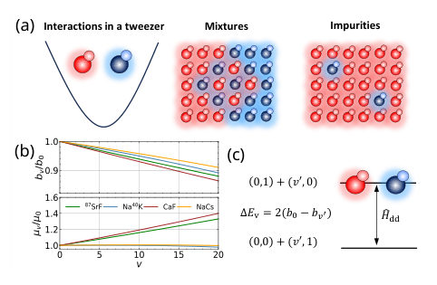
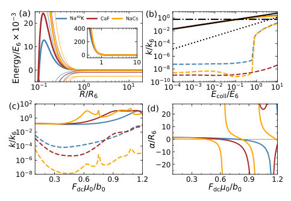
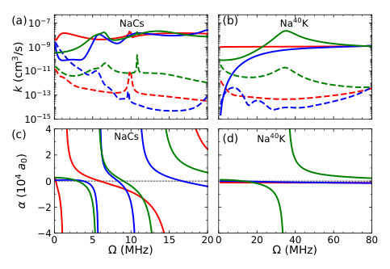
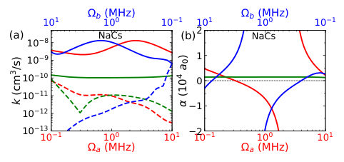
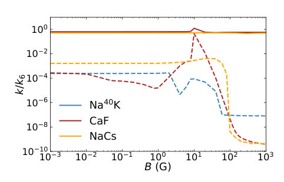
Summary. The authors propose using polar molecules to create stable, tunable two-component quantum gas mixtures via a phenomenon called 'vibrational shielding.' They demonstrate that external electric or microwave fields can independently tune the interactions between components. This opens a powerful pathway for creating and controlling complex quantum many-body systems in molecular platforms.
Why it may be interesting. This work directly addresses advanced topics in ultracold quantum gases by providing a mechanism (vibrational shielding) to stabilize mixtures that are otherwise difficult to control, analogous to Feshbach resonances for atoms.
Main problem. The primary goal is realizing stable, tunable two-component quantum mixtures of ultracold polar molecules.
Main result. Vibrational shielding stabilizes 3D bulk fermionic mixtures, and external fields (static or microwave) allow independent tuning of inter- and intra-component interactions.
Method. The study employs coupled-channel scattering calculations to model elastic and loss processes in the molecular gas mixture.
Model / system. The system involves ultracold polar diatomic molecules (e.g., NaCs) whose interactions are governed by the dipole-dipole Hamiltonian, $\hat{H}_{dd}$. The physics is modeled using coupled-channel scattering methods incorporating vibrational and rotational degrees of freedom.
Key observables. Elastic scattering rates ($k_{el}$), loss rate coefficients ($k_{loss}$), and tunable s-wave scattering lengths ($\alpha$).
Important parameters / regimes. The interaction is characterized by an effective $C_6R^{-6}$ repulsion, which is tuned by static electric fields ($\vec{F}_{dc}$) or microwave detunings/Rabi frequencies.
Assumptions / limitations. Approximations include neglecting transition dipoles between inter-vibrational levels and assuming high magnetic fields treat hyperfine states as spectators.
Figures summary. Figures illustrate the repulsive nature of incoming s-wave channels (adiabats), show rate coefficients vs. reduced electric fields, and map scattering properties ($\alpha$, $k_{loss}$) dependence on microwave field parameters.
Paper structure. The paper progresses from establishing the concept of vibrational shielding via dipole interactions to detailing how external static and microwave fields can independently tune all pairwise interactions in a bulk mixture, culminating in analysis of miscibility criteria based on scattering length ratios ($\gamma$).
We propose a method to realize stable, tunable two-component quantum mixtures of ultracold polar molecules. First, we show that a pair of polar molecules in two distinct rovibrational states exhibits a repulsive interaction, thereby leading to collisional shielding without requiring any external field. We refer to this as "vibrational shielding". This intercomponent interaction is tunable by an external static electric or a microwave field, with the latter stabilizing both inter- and intracomponent interactions in a two-component bulk mixture. Additionally, we show that two microwave fields can independently tune the interactions of the individual components. Our findings thus open the door to the experimental realization of tunable quantum mixtures using polar molecules, analogous to tunable magnetic Feshbach resonances in two-component atomic quantum gases.
Authors: Joey Frey, Paul Burger, Trond Hjerpekjøn Haug, Johan Kolvik, Raphaël Van Laer
Type: experiment · Category: quantum information and computing · PDF: https://arxiv.org/pdf/2607.29666v1
Analysis basis: full PDF text, analyzed in chunks
Topic relevance: 🔥 QC/QI experiment 4/5 · correlated cavity matter 1/5 · driven-dissipative phase transition 1/5 · quantum optics experiment 1/5
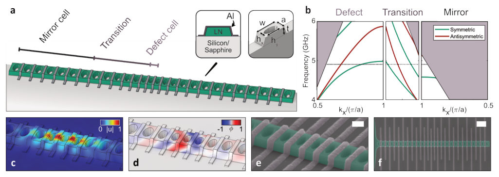
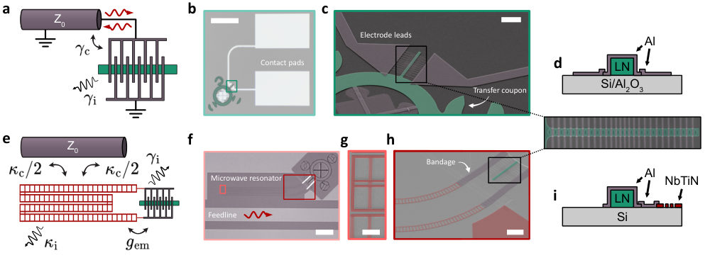
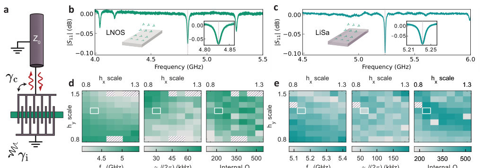
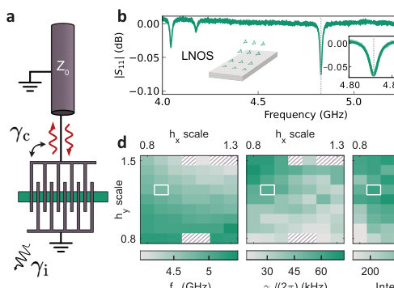
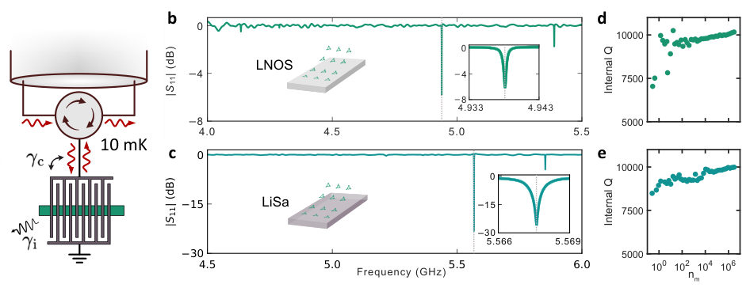
Summary. The paper reports on the realization of a release-free phononic crystal cavity that strongly couples microwave photons to gigahertz acoustic phonons. By overcoming the noise limitations of suspended structures, they demonstrate high cooperativity and excellent quality factors, establishing this platform as a scalable interface for quantum information processing.
Why it may be interesting. This work directly addresses quantum transduction—the critical link needed to connect superconducting qubits (microwave domain) to mechanical oscillators (phonon domain)—which is central to quantum networking architectures.
Main problem. The challenge is creating compact, scalable interfaces between microwaves and gigahertz sound (phonons) for quantum applications while avoiding the noise issues associated with suspended phononic structures.
Main result. The authors demonstrated a release-free phononic crystal cavity strongly coupled to a microwave resonator, achieving strong coupling parameters ($\mathcal{C} \approx 180$) and high quality factors ($Q > 10^4$).
Method. Experimental characterization using microwave reflection/transmission spectroscopy at cryogenic temperatures (down to 10 mK) combined with finite-element method simulations.
Model / system. The system utilizes release-free phononic crystal cavities patterned in lithium niobate ($ ext{LiNbO}_3$) on silicon or sapphire, coupled electromechanically via an Interdigital Transducer (IDT) to a high-impedance microwave resonator.
Key observables. Electromechanical coupling rate ($g_{em}/(2\pi)$), Cooperativity ($\mathcal{C}$), internal mechanical quality factor ($Q_i$), and microwave reflection/transmission spectra ($S_{11}, S_{21}$).
Important parameters / regimes. $g_{em}/(2\pi) \approx 30\, ext{MHz}$, $\mathcal{C} \approx 180$, $Q_i > 10^4$ at millikelvin temperatures.
Assumptions / limitations. The primary assumption is that the release-free structure can maintain strong coupling comparable to suspended devices while offering better thermal anchoring and scalability.
Figures summary. Figures show device schematics, mechanical band diagrams, mode simulations, SEM images of fabricated devices, and cryogenic measurement setups used for characterizing coupling strength and quality factors.
Paper structure. The paper progresses from identifying the need for robust phononic interfaces to demonstrating strong coupling in a release-free geometry, quantifying performance metrics like cooperativity and $Q$ factor across different temperature regimes.
Phonons hold promise for storing and transferring quantum information, including in mechanically-mediated quantum interconnects between superconducting qubits and light. Phononic crystal cavities confine gigahertz sound to micron-scale volumes well matched to near-infrared light. So far, these devices have typically been suspended to suppress phononic radiation loss into the substrate, but suspension limits thermal anchoring leading to excess noise. Release-free phononic crystals have emerged as a way to address this challenge -- but had yet to be shown compatible with strong electromechanical interactions. Here, we demonstrate a release-free phononic crystal cavity strongly coupled to a high-impedance microwave resonator, with an electromechanical coupling rate $g_\mathrm{em}/(2π) \approx 30\,\text{MHz}$ that exceeds both the mechanical and microwave loss rates, leading to a cooperativity up to $\mathcal{C} \approx 180$ on resonance. In addition, our lithium niobate phononic crystals reach quality factors above $10^4$ at millikelvin temperature on both silicon and sapphire substrates. Our results establish release-free phononic crystals as compact, scalable interfaces between microwaves and gigahertz sound for emerging sensing, communication, and computing systems.
Authors: J. Khatua, Changhyun Koo, Suyoung Kim, Eundeok Mun, Yugo Oshima, V. K. Sahu, Heung-Sik Kim, B. Koteswararao, Kwang-Yong Choi, P. Khuntia
Type: both · Category: strongly correlated electrons · PDF: https://arxiv.org/pdf/2607.29676v1
Analysis basis: full PDF text, analyzed in chunks
Topic relevance: 🔥 analog quantum simulation 4/5 · exotic spin models in light-matter 1/5 · spintronics-quantum-optics interface 1/5
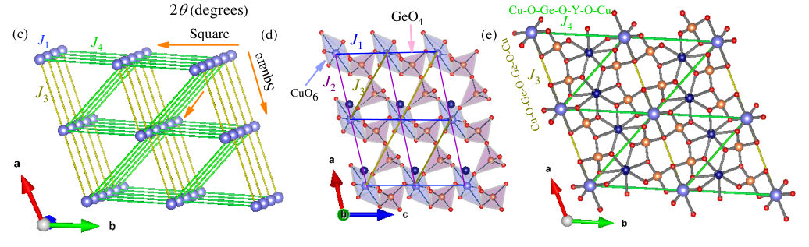
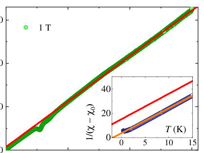
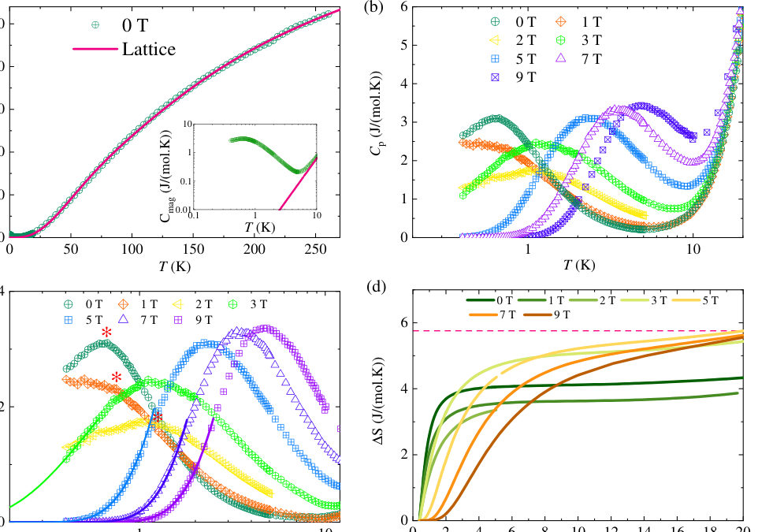
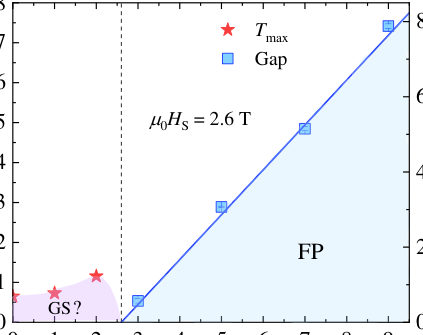
Summary. This work characterizes the magnetic properties of Y2CuGe4O12, a quasi-two-dimensional antiferromagnet featuring a distorted triangular lattice. By combining DFT calculations with measurements like specific heat and ESR, the authors confirm strong geometric frustration due to competing exchange interactions. The findings establish the material as a platform for studying quantum phenomena driven by frustrated magnetism.
Why it may be interesting. The study provides a detailed experimental realization of geometric frustration in a low-dimensional magnet, offering insights into how competing interactions stabilize quantum paramagnetic states rather than conventional long-range order.
Main problem. The study investigates exotic magnetic phenomena arising from competing magnetic interactions and frustration-induced quantum fluctuations in a quasi-two-dimensional antiferromagnet.
Main result. The material exhibits no long-range magnetic ordering down to 0.4 K, instead showing short-range spin correlations confirmed by susceptibility maxima and field-induced gapped magnon excitations above 2.6 T.
Method. A combination of experimental measurements (susceptibility, specific heat, ESR) and theoretical calculations (DFT) was employed to characterize the magnetic interactions.
Model / system. The physical system is polycrystalline Y2CuGe4O12, a spin-1/2 antiferromagnet where Cu2+ ions form a distorted triangular lattice with competing intraplanar and interplanar exchange couplings.
Key observables. Magnetic susceptibility ($\chi$), specific heat ($C/T$), ESR linewidth ($\Delta H(T)$), and the saturation field ($\mu_0H_s$).
Important parameters / regimes. Exchange interactions: $J_1 \approx 0.138$ K, $J_2 \approx 0.01$ K, $J_3 \approx -3.22$ K; Saturation field $\mu_0H_s = 2.6$ T.
Assumptions / limitations. The analysis assumes that the observed magnetic behavior is governed by competing exchange interactions within a frustrated lattice structure.
Figures summary. Figures show XRD patterns confirming crystal structure and schematic views illustrating the distorted triangular lattice formed by Cu2+ ions, detailing various exchange pathways ($J_1, J_2, J_3, J_4$).
Paper structure. The paper proceeds by characterizing the crystal structure via XRD, determining the magnetic interactions using DFT/exchange coupling calculations, and then analyzing temperature-dependent measurements ($\chi$, $C/T$, ESR) to map out the magnetic ground state and field responses.
Competing magnetic interactions and frustration-induced quantum fluctuations in spatially anisotropic low-dimensional magnets often give rise to exotic magnetic phenomena, including field-induced phases. Here, we present crystal structure, magnetic susceptibility, specific heat, and electron spin resonance (ESR) measurements on polycrystalline Y$2$CuGe$4$O${12}$, supported by density functional theory (DFT) calculations. In this compound, the Cu$^{2+}$ ions form a distorted triangular lattice with competing intraplanar ferromagnetic ($J_1 \approx 0.138$ K and $J_2 \approx 0.01$ K) and antiferromagnetic ($J_3 \approx -3.22$ K) exchange interactions, together with a weaker interplanar antiferromagnetic coupling ($J_4 \approx -1.56$ K). These interactions account for the small Curie--Weiss temperature, $θ{\rm CW}=-1.8$ K. Despite the dominant antiferromagnetic interactions, no signature of long-range magnetic ordering is observed down to 0.4 K. Instead, broad maxima in both the magnetic susceptibility and magnetic specific heat reveal the development of short-range spin correlations, further supported by the critical ESR linewidth broadening characteristic of low-dimensional frustrated magnets. Application of an external magnetic field progressively suppresses the broad maximum in the magnetic specific heat, reflecting competition between the Zeeman and exchange energy scales, and drives the system into a field-polarized state above the saturation field, $μ_0H_{\rm s}=2.6$ T. In this regime, the magnetic specific heat exhibits an exponential temperature dependence, consistent with gapped magnon excitations. These results establish Y$_2$CuGe$4$O${12}$ as a rare distorted triangular-lattice magnet in which further-neighbor exchange interactions dominate the magnetic behavior, providing a promising platform for exploring frustration-driven quantum phenomena.
Authors: Hao Zhong, Xingzhe Wang, Hanbin Deng, Tianyu Yang, Haixuan Cao, Renzhe Li, Qiang Wan, Shangkun Mo, Keming Zhao, Shuming Yu, Dingkun Qin, Guang Zhu, Yifan Zhou, Jianping Shi, Shuangfeng Jia, He Zheng, Jia-Xin Yin, Nan Xu
Type: experiment · Category: strongly correlated electrons · PDF: https://arxiv.org/pdf/2607.29022v1
Analysis basis: full PDF text, analyzed in chunks
Topic relevance: 🔥 analog quantum simulation 4/5 · correlated cavity matter 1/5 · non-equilibrium dynamics 1/5
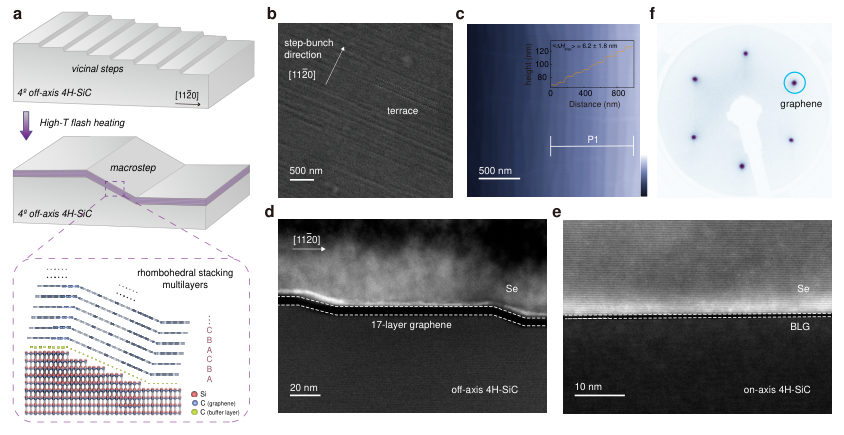
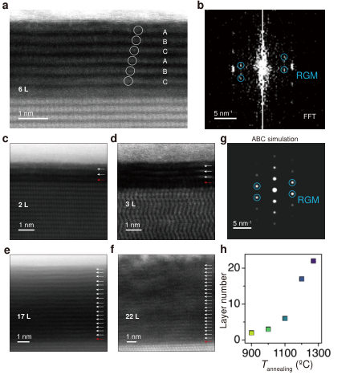
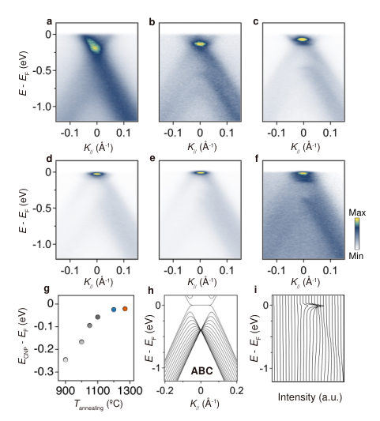
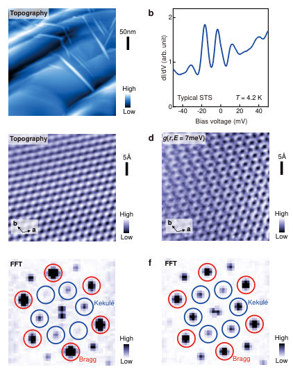
Summary. This work reports a novel, one-step method to grow thickness-tunable rhombohedral graphene multilayers directly on step-bunched SiC. By varying the annealing temperature, the researchers controlled the layer number while observing the electronic structure evolve from interface states toward pronounced flat bands. This establishes a powerful epitaxial platform for studying correlated electron physics in moiré-free systems.
Why it may be interesting. The direct creation of tunable flat bands via substrate engineering is highly relevant for realizing correlated electron physics in solid-state systems without complex transfer steps, which is a major goal in quantum materials research.
Main problem. The primary challenge was establishing a direct, transfer-free epitaxial method to create thickness-tunable rhombohedral graphene multilayers for studying flat-band physics.
Main result. They successfully demonstrated this by using high-temperature flash annealing on step-bunched SiC, creating an accessible platform that links structural engineering with correlated electronic states.
Method. The study employed a one-step graphitization route followed by advanced characterization techniques including ARPES and low-temperature STM/STS.
Model / system. The system is rhombohedral graphene multilayers (RGMs) grown epitaxially on step-bunched 4$^\circ$ off-axis 4H-SiC. The electronic physics is governed by the moiré-free stacking sequence, which allows for correlated flat-band behavior.
Key observables. Thickness-dependent spectral weight evolution near the Fermi level (ARPES); a $13.4 ext{ meV}$ low-energy spectral reconstruction and $\sqrt{3} imes \sqrt{3}$ Kekulé modulation (STM/STS).
Important parameters / regimes. Annealing temperature (used to tune thickness from bilayer to $>20$ layers); the stacking registry (ABC sequence).
Assumptions / limitations. The assignment of rhombohedral stacking is considered local; STM/STS results are interpreted cautiously regarding spontaneous intervalley coherence versus structural reconstruction.
Figures summary. Figures illustrate step bunching and cross-sectional STEM confirming ABCABC stacking. ARPES data show spectral weight shifting toward the Fermi level as thickness increases, while STM/STS maps reveal characteristic low-energy modulations on thick films.
Paper structure. The paper first introduces the need for a transfer-free growth method. It details the one-step annealing process and structural characterization (STEM). Subsequently, ARPES tracks electronic evolution with thickness, culminating in detailed STM/STS measurements confirming specific low-energy spectral features on thick films.
Rhombohedral graphene multilayers provide a moiré-free platform for correlated and topological flat-band physics, but direct, transfer-free epitaxial access to thickness-tunable multilayers remains limited. Here we report a one-step graphitization route on 4$^\circ$ off-axis 4H-SiC, in which high-temperature flash annealing simultaneously drives self-organized step bunching and multilayer graphene formation. Atomic-resolution cross-sectional scanning transmission electron microscopy identify local ABC registry and distinguish rhombohedral from Bernal stacking. The thickness is tuned from bilayer to more than twenty layers by varying single parameter, the annealing temperature. Angle-resolved photoemission spectroscopy directly tracks the thickness-dependent evolution from interface-dominated low-energy states toward pronounced near-Fermi-level flat-band spectral weight in thick multilayers. Low-temperature scanning tunneling microscopy and spectroscopy on a 17-layer film further reveal a 13.4 meV low-energy spectral reconstruction and a $\sqrt{3} \times \sqrt{3}$ Kekulé-like modulation, providing microscopic signatures consistent with an intervalley-mixed electronic texture. This one-step, transfer-free approach establishes step-bunched SiC as an epitaxial platform that links stacking engineering with moiré-free correlated flat-band electronic states.
Authors: Subhra Mondal, S. Shankaranarayanan
Type: theory · Category: other · PDF: https://arxiv.org/pdf/2607.29427v1
Analysis basis: full PDF text, analyzed in chunks
Topic relevance: 🔥 entanglement & information structure 4/5 · Keldysh / 2PI / non-Gaussian methods 1/5 · correlated / nonlocal dissipation 1/5
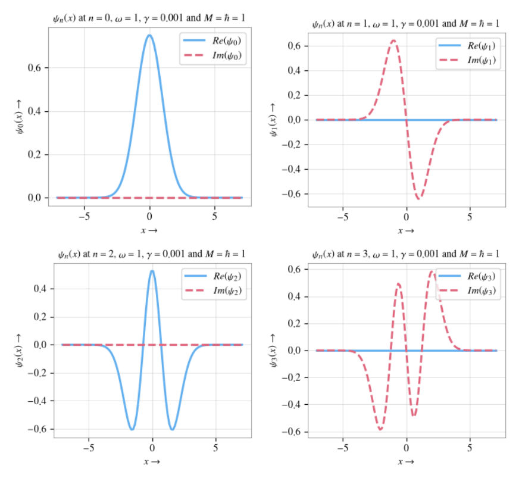
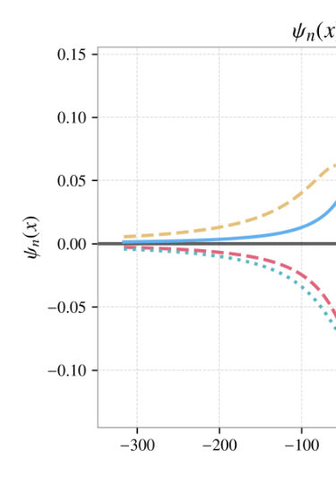
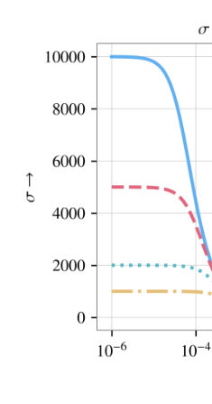
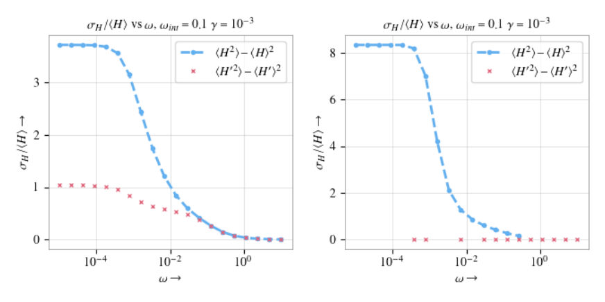
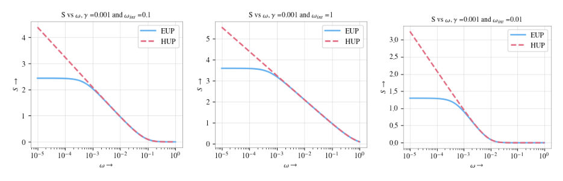
Summary. The paper tackles the problem of infrared divergence in entanglement entropy by incorporating the Extended Uncertainty Principle (EUP). By modifying canonical commutation relations, EUP imposes a natural geometric confinement on quantum fields. This confinement successfully regularizes the zero-mode divergences, leading to finite and physically meaningful values for the entanglement entropy.
Why it may be interesting. This work provides a concrete, geometric modification (EUP) to address fundamental divergences in quantum field theory observables like entanglement entropy, which is crucial for understanding vacuum structure and correlations in many-body systems.
Main problem. The primary goal is resolving infrared (IR) divergences encountered when calculating entanglement entropy in quantum field theories, which arise from the unbounded delocalization of zero-modes.
Main result. Invoking the Extended Uncertainty Principle (EUP) introduces an intrinsic geometric confinement that bounds spatial variance and causes the entanglement entropy to saturate to a finite value, thus resolving the IR divergence.
Method. The authors solve the simple harmonic oscillator under EUP corrections and extend this analysis to many-body systems by calculating entanglement entropy using techniques like moment matching and asymptotic expansion of von Neumann entropy.
Model / system. The study analyzes quantum systems including simple harmonic oscillators, one-dimensional harmonic chains, and massless scalar fields. The core modification is the EUP applied to canonical commutation relations: [x, p] = i\hbar(1 + \gamma x^2).
Key observables. Entanglement entropy ($S$), entanglement spectrum, spatial variance ($\langle x^2 angle$), and modular gap.
Important parameters / regimes. The EUP parameter $\gamma$ (related to the background Ricci scalar), the frequency $\omega$, and the large-eigenvalue limit $ u \gg 1$.
Assumptions / limitations. Assumes $\gamma$ is small and finite ($\gamma eq 0$) for regularization; relies on asymptotic expansions in various limits.
Figures summary. Figures compare spatial profiles of eigenstates under EUP vs. HUP, and show comparisons of entanglement entropy calculated via RDM versus RCM approaches.
Paper structure. The paper progresses from solving the SHO under EUP to establishing intrinsic confinement, then extends this regularization mechanism to calculate entanglement entropy for harmonic chains and scalar fields in the continuum limit.
The entanglement entropy of quantum systems typically exhibits both ultraviolet and infrared (IR) divergences. In the low-frequency limit, the IR divergence is intimately tied to the unbounded spatial delocalization of zero-modes, a pathological feature common to both coupled harmonic oscillators and massless scalar fields. In this work, we demonstrate that this infinite growth is naturally resolved by invoking the Extended Uncertainty Principle (EUP), which introduces large-length-scale geometric corrections to the canonical commutation relations. By exactly solving the simple harmonic oscillator under the EUP framework, we establish the existence of an intrinsic geometric confinement that enforces a strict upper bound on the position variance, limits spatial delocalization, and introduces an intrinsic localization length scale related to the background Ricci scalar. We extend this regularizing mechanism to many-body systems by evaluating the entanglement entropy and entanglement spectrum of a one-dimensional harmonic chain and a massless scalar field. We show that the EUP-induced spatial bounds prevent the accumulation of low-lying long-wavelength modes, keeping the entanglement spectrum discrete and evenly gapped even in the strictly massless limit. This non-vanishing modular gap effectively caps the local entanglement temperature of the vacuum. Consequently, the entanglement entropy saturates to a finite value, providing a robust, geometric resolution to the zero-mode IR divergence problem in quantum field theory.
Authors: Simon Messelot, Nicolas Aparicio, Kazi Rafsanjani Amin, Eric Eyraud, Bruno Fain, Mikaël Cassé, Guillaume Jourdan, Fabrice Nemouchi, Sébastien Hentz, Frédéric Gustavo, François Lefloch, Nicolas Roch, Jérémie J. Viennot, Julien Renard
Type: experiment · Category: other · PDF: https://arxiv.org/pdf/2607.29154v1
Analysis basis: full PDF text, analyzed in chunks
Topic relevance: 🔥 QC/QI experiment 4/5 · quantum optics experiment 1/5
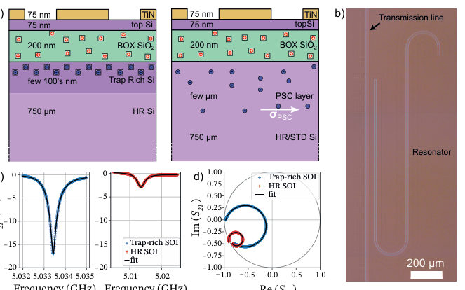
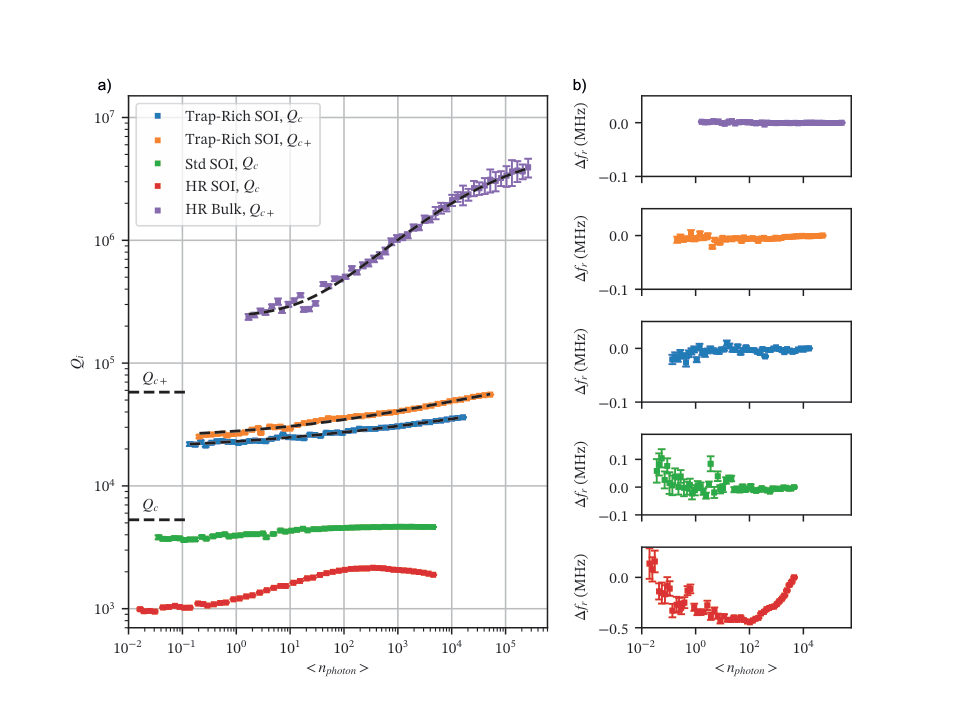
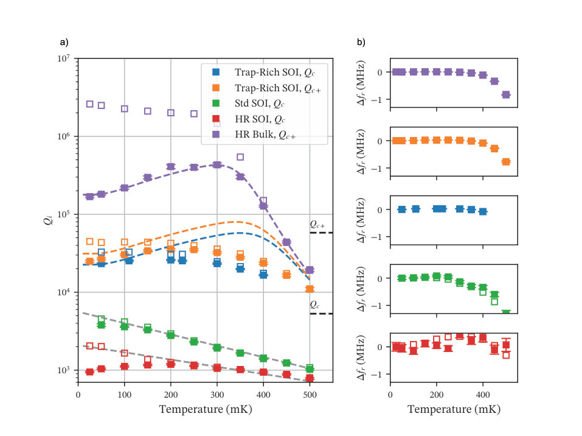
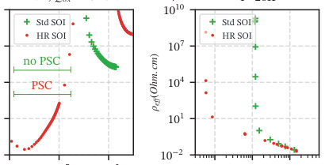
Summary. This research analyzes microwave losses in superconducting circuits built on various SOI substrates. It reveals that high-resistivity silicon suffers from parasitic surface conduction loss at the $ ext{Si}/ ext{SiO}_2$ interface, while standard silicon is limited by doping. The authors show that engineering traps into the substrate can suppress these losses, leading to superior device performance.
Why it may be interesting. This work is highly relevant as it directly addresses material science limitations for superconducting quantum devices, which are central to building scalable quantum hardware architectures.
Main problem. The study investigates the origins of microwave losses in superconducting circuits fabricated on Silicon-on-Insulator (SOI) substrates at cryogenic temperatures.
Main result. Standard resistivity SOI performs counterintuitively better than high-resistivity SOI because the latter suffers from parasitic sheet conduction loss; trap-rich SOI offers the best performance by suppressing these interface losses.
Method. Losses are characterized by measuring the internal quality factor ($Q_i$) of superconducting microwave resonators using $S_{21}$ measurements at base temperatures near 25 mK.
Model / system. The physical platform is a superconducting resonator (TiN film) integrated onto various SOI substrates (Standard, High-Resistivity, Trap-rich). The analysis models loss mechanisms like parasitic sheet conduction and dielectric losses in the $ ext{SiO}_2$ layer.
Key observables. Internal quality factor ($Q_i$), $S_{21}$ scattering parameter, power dependence of $Q_i$, and temperature dependence of losses.
Important parameters / regimes. Cryogenic temperatures ($\approx 25 ext{ mK}$), substrate resistivity ($ ho$), defect charge densities, and the presence/absence of parasitic sheet conduction (PSC).
Assumptions / limitations. The analysis assumes that PSC is the dominant loss mechanism in high-resistivity substrates, and that losses in trap-rich SOI are ultimately limited by $ ext{SiO}_2$ dielectric losses.
Figures summary. Figures show typical resonance shapes ($S_{21}$ vs. Frequency) for different substrate types, illustrating the measured quality factors under various conditions.
Paper structure. The paper systematically compares four types of SOI substrates using microwave resonators to pinpoint the dominant loss mechanism—identifying PSC in HR-SOI and demonstrating superior performance with trap-induced traps.
Silicon-on-insulator technology is widely used to fabricate silicon based devices, from advanced transistors to photonic circuits or nanomechanical systems. Integrating low loss superconducting quantum circuits with silicon-on-insulator substrates enables to couple the advantages offered by the mature silicon technology to the exquisite sensitivity of superconducting circuits. The natural approach, inherited from research in superconducting microwave devices, is to use a substrate made with highly resistive silicon, known for its low level of microwave losses. In this work, using superconducting microwave resonators, we show that counterintuitively, standard resistivity silicon-on-insulator substrates perform better than high resistivity silicon-on-insulator substrates at cryogenic temperatures. In the latter case, the presence of a parasitic sheet conduction at the interface between bulk silicon and silicon oxide acts as the dominant loss mechanism. This parasitic sheet can be suppressed using substrates with intentionally induced traps. In such substrates, losses are ultimately limited by the dielectric losses of the silicon oxide layer. These substrates offer interesting perspectives for the development of superconducting nanoelectromechanical systems. First, the release, i.e. the removal of the silicon oxide, could be limited to the moving parts, thereby maintaining the mechanical integrity of the rest of the device. Additionally, such structure would enhance heat evacuation into the bulk of the substrate which is an issue in current devices such as microwave-to-optics converters.
Authors: Samuel Napoli, Andrea Zappalá, Franco Nori, Salvatore Savasta, Daniele Lamberto
Type: theory · Category: other · PDF: https://arxiv.org/pdf/2607.29313v1
Analysis basis: full PDF text, analyzed in chunks
Topic relevance: Tavis-Cummings & cavity-many-emitter 3/5 · correlated cavity matter 3/5 · driven-dissipative phase transition 3/5 · methods for driven-dissipative 3/5 · analog quantum simulation 2/5 · correlated / nonlocal dissipation 2/5 · non-equilibrium dynamics 2/5 · Dicke superradiance 1/5 · Keldysh / 2PI / non-Gaussian methods 1/5 · entanglement & information structure 1/5 · interference shaping light 1/5 · non-equilibrium universality 1/5
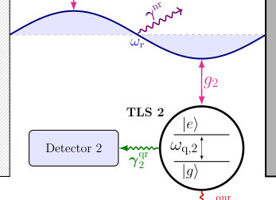
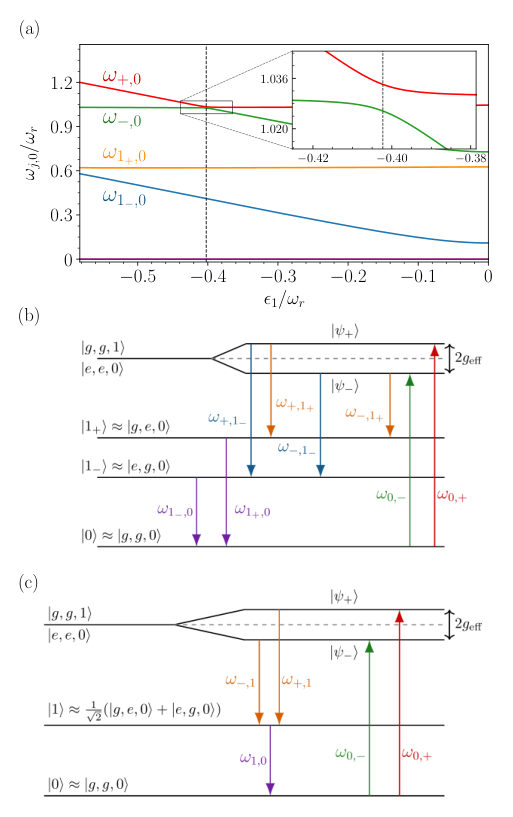
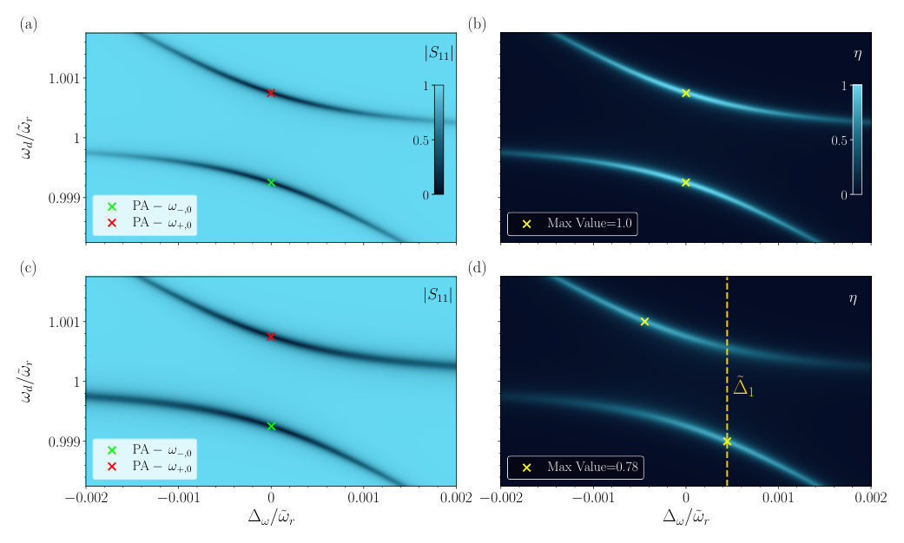
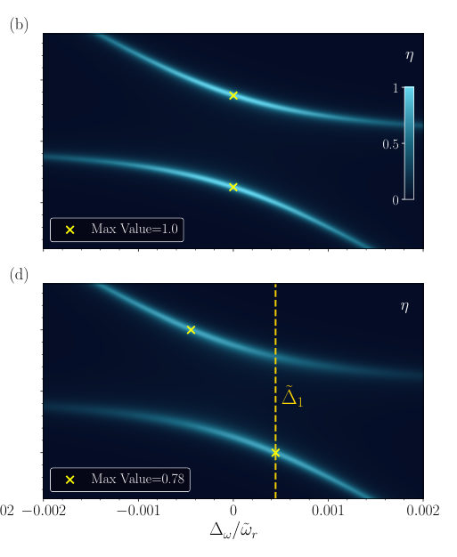
Summary. This paper pioneers the use of non-Hermitian physics, specifically perfect absorption, to overcome dissipation barriers in quantum nonlinear optics. By analyzing circuit QED systems operating in the ultrastrong coupling regime, the authors show how to engineer near-deterministic single-photon down-conversion into correlated multi-photon pairs. This establishes a powerful new route for optimizing quantum devices using non-Hermitian engineering principles.
Why it may be interesting. This work is highly relevant as it directly applies non-Hermitian physics concepts (like PA and Hermitian subspaces) to optimize quantum light sources at the fundamental single-photon level within a cavity QED platform.
Main problem. To develop scalable quantum technologies by harnessing strong photon-photon interactions while overcoming dissipative losses inherent in quantum nonlinear optics.
Main result. The authors demonstrate that exploiting perfect absorption conditions allows for near-deterministic single-photon down-conversion into correlated multi-photon pairs, even when realistic dissipation is present.
Method. They bridge non-Hermitian physics with QNLO by analyzing the system's response using input-output theory and identifying optimal operating points via spectral analysis.
Model / system. The study investigates two circuit QED systems involving qubits coupled to a resonator, modeled using generalized Dicke Hamiltonians in the light-matter ultrastrong coupling regime. The analysis focuses on effective non-Hermitian Hamiltonians derived from input-output theory.
Key observables. Near-deterministic single-photon down-conversion efficiency ($\eta$), reflection coefficient $|S_{11}|$, and emission spectra $ ilde{S}_{q,1}(\omega)$.
Important parameters / regimes. Ultrastrong coupling regime (USC), perfect absorption condition in $|S_{11}|$, detuning ($\Delta\omega$), and experimentally accessible parameters governing loss rates.
Assumptions / limitations. The analysis relies on the weak-excitation approximation for some parts, but crucially shows optimization is possible even with realistic dissipation present.
Figures summary. Figures illustrate the circuit QED setup (Fig. 1), show spectral features like avoided level crossings related to PA/zeros ($ ilde{\Omega}_{\pm}$), and plot conversion efficiencies ($\eta$) versus drive frequency or detuning.
Paper structure. The paper progresses by first establishing the theoretical framework connecting PA to QNLO, then analyzing specific circuit QED setups (two-atom excitation, single-photon to two-photon conversion) using input-output theory and spectral mapping.
Quantum nonlinear optics seeks to harness strong photon-photon interactions for scalable quantum technologies, although dissipative losses still pose a major barrier to near-unity conversion efficiency. Here, we bridge non-Hermitian physics with the quantum nonlinear domain by exploiting perfect absorption to identify and optimize few-photon nonlinear processes. We theoretically investigate two circuit QED systems, operating in the light-matter ultrastrong coupling regime. The first (i) enables simultaneous two-atom excitations by single photons, while the second (ii) realizes the strong coupling between a single-photon and a two-photon Fock states. We demonstrate that, since the strong optical nonlinearities cause quantum spectral features to emerge already at the level of linear response theory, the perfect absorption condition in $|S_{11}|$ enables near-deterministic single-photon down-conversion into (i) a qubit-qubit-correlated pair and (ii) a two-photon pair. We show that the conversion efficiency can be systematically optimized through experimentally accessible parameters, both linked to the emergence of Hermitian subspaces within the effective non-Hermitian Hamiltonians. These findings position non-Hermitian engineering as a broadly applicable route to optimizing quantum devices at the single-photon level, even beyond circuit-QED platforms.
Authors: Emil Östberg, Arvid Steen, Najmeh Abiri, Irene D'Amico, Claudio Verdozzi
Type: theory · Category: strongly correlated electrons · PDF: https://arxiv.org/pdf/2607.29339v1
Analysis basis: full PDF text, analyzed in chunks
Topic relevance: analog quantum simulation 3/5 · driven-dissipative phase transition 3/5 · methods for driven-dissipative 3/5 · non-equilibrium dynamics 3/5 · Keldysh / 2PI / non-Gaussian methods 2/5 · correlated / nonlocal dissipation 2/5 · non-equilibrium universality 2/5 · Kondo & dissipative impurity 1/5 · entanglement & information structure 1/5 · exotic spin models in light-matter 1/5 · scars & prethermalization 1/5
Summary. This paper analyzes a Hubbard-Holstein dimer as a quantum battery, demonstrating that while ideal work extraction is theoretically difficult, a practical protocol involving spectral matching can efficiently extract stored energy. The mechanism relies on the interplay between electronic correlations and phonon modes, offering insights into realistic quantum energy storage limitations.
Why it may be interesting. It bridges concepts from strongly correlated electron models (Hubbard) with open quantum systems dynamics (phonon coupling/dissipation), providing concrete mechanisms for non-equilibrium energy management relevant to quantum thermodynamics.
Main problem. The research investigates efficient quantum energy storage and work extraction from a quantum battery, specifically addressing the gap between ideal theoretical protocols and physically realizable methods.
Main result. While optimal work extraction requires unphysical fine-tuning, a practical protocol based on spectral matching using phonon coupling allows for substantial, realistic energy extraction.
Method. The study uses time evolution simulations governed by an extended Hubbard-Holstein Hamiltonian coupled to a dissipative bath, employing the mixed quantum–classical Ehrenfest approximation.
Model / system. The system is a two-electron Hubbard–Holstein (HH) dimer acting as a quantum battery. It models electronic correlations (Hubbard term), electron-phonon coupling (Holstein term), and environmental dissipation via a Caldeira-Leggett bath.
Key observables. Ergotropy ($W$), site occupations ($\langle\hat{n}_L angle, \langle\hat{n}_R angle$), and average phonon displacement ($\langle\hat{b}^\dagger + \hat{b} angle$).
Important parameters / regimes. The interplay between electronic coupling ($J$), on-site repulsion ($U$), and the spectral bandwidth of the bath.
Assumptions / limitations. Ideal work extraction protocols often rely on unphysical, highly structured couplings; the use of the Ehrenfest approximation is noted as a limitation.
Figures summary. Figures illustrate the setup (isolated vs. dissipative), time evolution showing phonon displacement and site occupations across charging, dissipation, and discharging regimes.
Paper structure. The paper progresses by establishing the HH dimer as a quantum battery, contrasting ideal unitary discharge protocols with practical load-coupled methods, and analyzing how spectral matching dictates efficient energy retrieval while discussing the role of phonons in suppressing dissipation.
A Hubbard-Holstein dimer functions as a correlation-driven quantum battery, with ergotropy robustly stored, under some conditions, even in the presence of dissipation. We find that, although optimal work extraction can in principle recover all the stored energy, it requires unrealistically fine-tuned couplings. By contrast, a physically realizable protocol based on spectral matching between the battery and the load achieves substantial, albeit suboptimal, energy extraction. Our results identify a mechanism for quantum energy storage, provide a realistic route to work extraction that is amenable to machine-learning-based theoretical exploration, and suggest that quantum batteries may not be universally deployable: the microscopic mechanism responsible for storing energy can constrain the classes of systems able to efficiently extract it.
Authors: Tamim Al-Qaiwani, Sören Petrat
Type: theory · Category: other · PDF: https://arxiv.org/pdf/2607.29485v1
Analysis basis: full PDF text, analyzed in chunks
Topic relevance: Keldysh / 2PI / non-Gaussian methods 3/5 · correlated / nonlocal dissipation 3/5 · methods for driven-dissipative 3/5 · Tavis-Cummings & cavity-many-emitter 2/5 · driven-dissipative phase transition 2/5 · Kondo & dissipative impurity 1/5 · analog quantum simulation 1/5 · correlated cavity matter 1/5 · non-equilibrium dynamics 1/5 · non-equilibrium universality 1/5
Summary. This paper rigorously analyzes the decay of an excited state coupled to a bath whose spectrum is initially discrete but converges weakly to a continuum. By establishing precise asymptotic formulas, it shows that the survival probability decays exponentially at a rate predicted by Fermi's golden rule for the limiting continuous spectral density.
Why it may be interesting. This work provides a rigorous mathematical framework for understanding resonance phenomena (decay) when the underlying bath spectrum is purely discrete but approaches a continuous one. This bridges gap between idealized models and realistic physical systems where spectral structure matters greatly.
Main problem. The paper investigates how an initially stable excited state, described by a Friedrichs Hamiltonian coupled to a bath with purely discrete spectrum, can exhibit exponential decay.
Main result. Under specific convergence assumptions on the spectral measures, the survival probability decays approximately exponentially at a rate determined by Fermi's golden rule applied to the limiting continuous measure.
Method. The analysis uses weak convergence of spectral measures (Lévy distance) and approximates the time evolution operator using techniques involving convolution with Cauchy kernels to handle the discrete spectrum limit.
Model / system. The core model is the Friedrichs Hamiltonian, representing an excited state coupled to a bath. A specific application studied is the two-level atom coupled to a massless bosonic field confined in a large cavity (a spin-boson type system).
Key observables. Survival probability $p_\mu(t) = |\langle\chi, \exp(-itH(\mu))\chi angle|^2$, decay rate $\Gamma(E_0)$, and energy shift $\Delta(E_0)$.
Important parameters / regimes. The coupling strength ($\mu$), the size of the confinement ($L$), and the convergence parameters related to the spectral measure distance (e.g., Lévy distance).
Assumptions / limitations. Crucially, it assumes that the discrete spectral measures converge weakly to a limiting measure that is absolutely continuous with a Hölder continuous density near the excited energy.
Paper structure. The paper builds from defining the problem using Friedrichs Hamiltonians and analyzing the survival amplitude. It establishes theorems relating the discrete spectral measures to their continuum limit, culminating in the asymptotic weak-coupling and continuum limit result for the evolution operator.
We study a class of Friedrichs Hamiltonians, that is, operators describing an excited state coupled to a bath through a rank-one perturbation, in the case where the bath Hamiltonian has purely discrete spectrum. We consider sequences of such Hamiltonians for which the spectral measures associated to the coupling functions by the bath Hamiltonians converge weakly to a limiting measure that is absolutely continuous with a Hölder continuous density near the excited energy. Under this assumption, we show that the survival probability of the excited state decays in an approximately exponential manner on suitable time scales and under favourable conditions, with a decay rate given by Fermi's golden rule for the limiting measure. The error is estimated in terms of the coupling strength and the Lévy distance between the discrete spectral measures and the limiting measure. As an application, we treat a two-level atom coupled to a massless bosonic field confined to a large cavity in the rotating-wave approximation.
Authors: Ibsal Assi, Meenu Kumari, J. P. F. LeBlanc
Type: theory · Category: other · PDF: https://arxiv.org/pdf/2607.29418v1
Analysis basis: full PDF text, analyzed in chunks
Topic relevance: analog quantum simulation 3/5 · methods for driven-dissipative 3/5 · non-equilibrium dynamics 3/5 · non-equilibrium universality 2/5 · Keldysh / 2PI / non-Gaussian methods 1/5 · correlated / nonlocal dissipation 1/5 · driven-dissipative phase transition 1/5 · entanglement & information structure 1/5
Summary. The paper introduces a variational framework to accurately approximate the time evolution of quantum systems, particularly those subjected to periodic driving (Floquet systems). By minimizing an action principle on a constrained operator manifold, it derives effective Floquet Hamiltonians that surpass the accuracy limits of standard Magnus expansions. This method offers a versatile and scalable tool for non-equilibrium quantum dynamics across various physical models.
Why it may be interesting. This work provides a powerful, non-perturbative tool for analyzing open quantum systems and periodically driven matter. Its ability to systematically improve accuracy over standard expansions makes it highly valuable for simulating complex dynamics in condensed matter or AMO settings where high precision is required.
Main problem. The primary goal is to develop a systematic variational framework for approximating the time-evolution operator of general time-dependent quantum systems, with a specific focus on deriving effective Floquet Hamiltonians for periodically driven systems.
Main result. The proposed variational method yields an effective Floquet Hamiltonian that is systematically more accurate than low-order Magnus expansions, especially in regimes where conventional methods fail to converge.
Method. It reformulates quantum dynamics using a variational principle applied to the action integral over a parameterized operator manifold. This leads to solving coupled ordinary differential equations (ODEs) for the variational parameters.
Model / system. The framework is general, applying to any time-dependent Hamiltonian H(t). Benchmarking was performed on specific models like the driven Rabi model and the driven Ising chain, which are representative of periodically driven quantum systems.
Key observables. The effective Floquet Hamiltonian (H_F) and the variational parameters {theta_j(t)} that define the approximate time-evolution operator U(t).
Important parameters / regimes. Period T (for periodic driving), the size of the chosen operator manifold M, and the convergence behavior relative to the Magnus expansion order.
Assumptions / limitations. The method assumes the existence of a physically motivated, finite-dimensional operator manifold spanned by $\{\hat{O}_j\}$ that can parameterize the time evolution. The accuracy depends on the completeness of this chosen basis set.
Figures summary. Figure 1 schematically illustrates the entire variational framework, mapping from input Hamiltonian H(t) and basis operators to the output effective Floquet Hamiltonian H_F.
Paper structure. The paper introduces the variational action principle for U(t), derives the coupled ODEs governing the parameters on the operator manifold, details how this approach scales by projecting dynamics onto the low-dimensional operator space, and benchmarks the method against established techniques like the Magnus expansion and flow equations using specific physical models.
We introduce a variational framework for approximating the time-evolution operator $\hat{U}(t)$ within a physically motivated operator manifold, reformulating quantum dynamics as a tractable problem in operator space using stationary action principle. For periodically driven systems, the resulting approximate evolution operator directly yields an effective Floquet Hamiltonian, offering a non-perturbative alternative to conventional expansion-based methods. The framework is systematically improvable by enlarging the operator pool and naturally incorporates symmetries and physical constraints. When the operator manifold is chosen from the terms of a truncated Magnus expansion, the variational procedure effectively resums the Magnus series within the restricted space, significantly enhancing accuracy. We benchmark the approach on the driven Rabi model, the driven Lipkin-Meshkov-Glick model, and the one-dimensional driven Ising chain, yielding effective Floquet Hamiltonians that are systematically more accurate than low-order Magnus expansions, particularly in regimes where the latter converge poorly, and illustrating applicability to systems with exponentially large Hilbert spaces. Although we focus here on Floquet systems, the formalism applies equally to generic time-dependent Hamiltonians, providing a versatile tool for non-equilibrium quantum dynamics.
Authors: Christoph F. Wildfeuer
Type: theory · Category: quantum information and computing · PDF: https://arxiv.org/pdf/2607.29012v1
Analysis basis: full PDF text, analyzed in chunks
Topic relevance: quantum measurements 3/5 · quantum optics experiment 3/5 · correlated / nonlocal dissipation 2/5 · entanglement & information structure 2/5 · measurement-induced transitions 2/5 · QC/QI experiment 1/5 · driven-dissipative phase transition 1/5 · interference shaping light 1/5
Summary. This paper rigorously analyzes the feasibility of violating Bell inequalities using path-entangled single photons under realistic experimental constraints. By modeling losses, dark counts, and component mismatches, the authors show that simple on-off detection is more robust than parity measurements for this task. Ultimately, they conclude that the primary bottleneck for demonstrating nonlocality is achieving high mode overlap between optical components rather than overcoming fundamental efficiency limits.
Why it may be interesting. This work is highly relevant as it bridges fundamental quantum foundations (Bell tests) with practical quantum optics engineering challenges (loss, mode matching), providing concrete metrics for future experiments in quantum communication and metrology.
Main problem. The paper addresses whether a single photon delocalized over two modes (path-entangled number states) can violate a Bell inequality under realistic, lossy experimental conditions.
Main result. The authors find that the CHSH threshold is more easily met using simple on-off detection compared to parity measurements, and the primary obstacle shifts from conceptual efficiency limits to achieving high mode overlap between components.
Method. They provide closed correlators for N00N states accounting for realistic imperfections like loss, dark counts, and mode mismatch, analyzing the CHSH value as a function of these parameters.
Model / system. The system involves path-entangled number states (N00N states) tested via measurements that require an active displacement operation ($\hat{D}(\alpha)$) to escape limitations imposed by particle-number superselection rules.
Key observables. CHSH value ($|S|$), detection efficiency ($\eta$), and the required mode overlap between components.
Important parameters / regimes. The threshold efficiencies for violation are calculated (e.g., 0.83 for on-off vs. 0.95 for parity); the critical parameter becomes the achievable mode overlap, which must be $\approx 0.92$.
Assumptions / limitations. The analysis assumes that a shared phase reference provided by a local oscillator is necessary to close conceptual loopholes regarding Bell violations.
Paper structure. The paper first establishes the theoretical necessity of a shared phase reference. It then derives closed correlators for N00N states under various realistic loss channels, comparing the robustness of on-off versus parity measurements to determine the most viable experimental scheme.
A single photon delocalised over two modes is entangled, and whether that entanglement can violate a Bell inequality has been disputed for three decades. In principle it is settled: the surviving objection was the absence of a shared phase reference, and a local oscillator supplies one, acting as a shared frame rather than as a measurement setting. In practice it is open, and what remains is a question about the apparatus. Loss does not spoil a parity measurement so much as rescale it, carrying it into the same one-parameter family of detector operators that already contains on--off detection. Within that family we give closed correlators for path-entangled number states, or N00N states, at arbitrary efficiency, with dark counts, mode mismatch, phase noise and upstream loss. Because loss and displacement commute up to a rescaling of the displacement amplitude, loss before and after the displacement is interchangeable, and a symmetric experiment is governed by one overall efficiency: the probability that a heralded photon is detected. For a single photon the Clauser--Horne--Shimony--Holt threshold on that efficiency is 0.83 with on--off detection and 0.95 with parity, so the scheme that needs no photon-number resolution is the more robust, by twelve percentage points of loss and a factor of five in tolerable dark counts. Efficiency is no longer the obstacle; the mode overlap is. The best demonstrated telecom coupling, a buildable interferometer and today's detectors give an overall efficiency of 0.86, at which the required overlap is 0.92. We show that this overlap carries the heralded photon's single-mode weight as well as the local oscillator's mode match, so buying more of it costs heralding efficiency --- and no source has reported the two together.
Authors: Ivan Iorsh, Mikhail Titov
Type: theory · Category: other · PDF: https://arxiv.org/pdf/2607.29424v1
Analysis basis: full PDF text, analyzed in chunks
Topic relevance: Keldysh / 2PI / non-Gaussian methods 3/5 · non-equilibrium dynamics 3/5 · methods for driven-dissipative 2/5 · spintronics-quantum-optics interface 2/5 · analog quantum simulation 1/5 · correlated / nonlocal dissipation 1/5 · driven-dissipative phase transition 1/5 · interference shaping light 1/5 · non-equilibrium universality 1/5
Summary. This theoretical work establishes a direct method—dc-driven Kerr microscopy—to probe an interband-coherence Hall effect in semiconductors. It shows that applying a DC field generates a transverse coherence flux, which manifests as a measurable, edge-localized polarization signal at physical boundaries. This mechanism is fundamentally distinct from traditional spin or orbital effects.
Why it may be interesting. While focused on solid-state transport, the rigorous derivation of coherence dynamics and its coupling to boundary effects mirrors complex open quantum system problems where boundary conditions dictate observable macroscopic responses.
Main problem. The study identifies a novel Hall response mechanism driven by optically induced interband coherence, distinct from conventional non-equilibrium band population effects.
Main result. A dc electric field drives a transverse flux of conduction-valence coherence, which is converted into an antisymmetric, edge-localized Kerr signal at boundaries. This effect requires no spin-orbit coupling or intra-band accumulation.
Method. The analysis involves deriving and solving boundary kinetic equations for the interband coherence density and flux using the eight-band Kane model framework.
Model / system. The system is a weakly doped zinc-blende semiconductor, modeled using the eight-band Kane Hamiltonian. The dynamics are governed by coupled drift-diffusion equations describing the evolution of optical coherence.
Key observables. Kerr signal ($\Theta_K$, $\eta_K$), interband coherence flux ($J_L^y$), and coherence density ($L$).
Important parameters / regimes. Optical detuning ($\delta_F$), interband dephasing length ($\ell_\phi$), electron–hole asymmetry, and semiconductor band gap structure.
Assumptions / limitations. The analysis relies on a two-moment closure approximation for the coherence dynamics; specific boundary conditions (diffusive/specular) are applied to model reflection at interfaces.
Figures summary. Figures illustrate the conversion of interband coherence flow into an edge Kerr signal, showing monotonic resonance profiles and damped spatial oscillations away from resonance due to detuning.
Paper structure. The paper progresses by establishing the physical mechanism (coherence flux driven by DC field), deriving the necessary kinetic equations using the Kane model, solving these equations under boundary conditions, and finally analyzing the resulting spectral and spatial dependence of the Kerr signal.
We identify a Hall response carried by optically induced interband coherence rather than by a non-equilibrium band population. In a weakly doped zinc-blende semiconductor, a longitudinal dc field drives a transverse flux of the conduction--valence coherence created by near-gap light. Angular averaging eliminates the homogeneous coherence density, while a lateral boundary converts the transverse flux into an antisymmetric, edge-localized, helicity-odd polarization. The resulting Kerr signal requires neither spin-orbit coupling nor a spin, valley, or orbital accumulation within an individual band. Within the eight-band Kane model, we derive the boundary kinetic equation and obtain a complex propagation length controlled by optical detuning and interband dephasing. The edge profile is monotonic at optical resonance and develops damped spatial oscillations away from it. The response is enhanced by electron--hole asymmetry and by strong interband mixing, making narrow-gap semiconductors especially favorable to observe the effect. These results establish dc-driven Kerr microscopy as a direct probe of an interband-coherence Hall effect and of multiband quantum kinetics in real space.
Authors: Lucas A. Ostrowski, Giacomo Pantaleoni, Howard M. Wiseman, Dominic W. Berry
Type: theory · Category: other · PDF: https://arxiv.org/pdf/2607.28716v1
Analysis basis: full PDF text, analyzed in chunks
Topic relevance: Keldysh / 2PI / non-Gaussian methods 3/5 · methods for driven-dissipative 3/5 · correlated / nonlocal dissipation 2/5 · driven-dissipative phase transition 2/5 · non-equilibrium dynamics 2/5 · interference shaping light 1/5 · non-equilibrium universality 1/5 · superradiant laser 1/5
Summary. The paper proposes that the coherence of light beams can be dramatically increased beyond standard theoretical limits ($\mu^2$ or $\mu^4$) by arranging multiple linear amplifiers in a cascade. By circumventing strict idealization assumptions, this cascaded structure allows for an exponential scaling of coherence with respect to the total excitation number. The methodology relies on advanced quantum noise analysis using Langevin equations and power spectra.
Why it may be interesting. This work is highly relevant for theoretical physicists working on open quantum systems and quantum optics, as it provides a concrete mechanism (cascading amplifiers) to violate established coherence bounds by relaxing idealized physical constraints. The use of advanced spectral analysis techniques is also valuable.
Main problem. The primary goal is to surpass the known upper bounds on optical coherence ($\mathcal{C}$) achievable by standard laser beams.
Main result. By utilizing a cascade of linear amplifiers, the coherence $\mathcal{C}$ can theoretically scale exponentially with the total source excitation number $\mu$, specifically $\mathcal{C} \propto \exp(4\mu)$.
Method. The analysis employs quantum Langevin equations and power spectrum techniques in the frequency domain to track the evolution of field operators through cascaded cavities.
Model / system. The system modeled is a cascade of $N$ phase-insensitive single-mode linear amplifiers, where each amplifier's output feeds unidirectionally into the next. The analysis focuses on the subthreshold regime ($\gamma_j < \kappa_j$).
Key observables. Coherence ($\mathcal{C}$), defined via Glauber coherence functions; Mean Photon Number ($\mu$); and the expectation value $\langle \hat{S} / \sqrt{\hat{S}^\dagger \hat{S}} angle$.
Important parameters / regimes. The number of amplifiers ($N$), the total source excitation number ($\mu$), and the individual amplifier gain/coupling rates ($\kappa_j, \gamma_j$).
Assumptions / limitations. Crucially, the approach requires dropping the 'Glauber Ideality' condition that limits standard laser coherence scaling. The analysis also relies on linearizing the dynamics using Gaussian noise assumptions.
Figures summary. The notes do not provide a summary of figures, but they detail mathematical derivations involving power spectra and special functions (hypergeometric/Bessel).
Paper structure. The paper progresses from establishing standard laser coherence limits ($\mu^2$ or $\mu^4$) to proposing the cascaded amplifier model. It then uses quantum Langevin equations and spectral analysis to derive the scaling law, culminating in complex mathematical evaluations of expectation values.
A standard laser beam has photon degeneracy, or coherence, $\mathfrak{C}$, of at most $8μ^2$, where $μ$ is the number of photons in the laser itself. Even quantum-engineered lasers, if required to produce a beam with the standard statistical properties, have limited coherence, scaling as $μ^4$. Moreover, such lasers (still unrealised) require very unconventional gain and output-coupling mechanisms. Here, we propose a different path to increasing $\mathfrak{C}$: cascaded linear amplifiers, with conventional couplings. By dropping the requirement on the beam's properties, this approach can, in theory, achieve $\mathfrak{C}$ scaling exponentially in $μ$. Here $μ$ is the total source excitation number, across all the amplifiers. Two amplifiers suffice to surpass the standard $μ^2$ scaling.
Authors: Nelson Bolívar, Gabriel Abellán, Ivaylo Vasilev
Type: theory · Category: statistical mechanics · PDF: https://arxiv.org/pdf/2607.28938v1
Analysis basis: full PDF text, analyzed in chunks
Topic relevance: driven-dissipative phase transition 3/5 · methods for driven-dissipative 3/5 · non-equilibrium dynamics 3/5 · non-equilibrium universality 2/5 · Frenkel-Kontorova 1/5 · Keldysh / 2PI / non-Gaussian methods 1/5 · analog quantum simulation 1/5 · correlated / nonlocal dissipation 1/5
Summary. This work develops a comprehensive, symmetry-constrained continuum model to explain how zero-mean external forcing can generate net directional motion at liquid-vapor interfaces. It achieves this by rigorously accounting for momentum transfer across multiple interacting physical channels, demonstrating that the rectification strength is dictated by the correlation between local response and the applied drive.
Why it may be interesting. While focused on classical fluid dynamics, the rigorous application of momentum balance and the identification of non-equilibrium driving forces via correlation terms ($\langle Mf angle-\langle M angle\langle f angle$) provides a powerful theoretical framework applicable to open quantum systems where symmetry breaking drives directed current.
Main problem. The paper investigates how directed transport (momentum rectification) can arise from zero-mean, unbiased external forcing when the physical medium exhibits spatially structured responses and broken symmetries.
Main result. Rectified momentum transfer is governed by a symmetry-constrained accounting scheme based on covariance terms ($\langle Mf angle-\langle M angle\langle f angle$), showing specific phase selection rules and bounded gain near wetting transitions.
Method. The authors develop and apply a conservative continuum model rooted in local momentum conservation, treating the system as a ledger of interacting reservoirs (e.g., thermal, electro-ionic, interface).
Model / system. The primary physical system is a liquid-vapor interface near wetting transitions, modeled using diffuse-interface methods and coupled to various continuum fields like temperature gradients and wall interactions.
Key observables. Directed drift velocity ($U$), the covariance term ($\langle Mf angle-\langle M angle\langle f angle$), and the wetting susceptibility ($\chi$).
Important parameters / regimes. Wetting susceptibility, thermal amplitude ($\Theta$), heterogeneity amplitude ($\epsilon_h$), and system criticality (first-order spinodal vs. critical point).
Assumptions / limitations. The result is presented as a diagnostic accounting scheme; the model requires explicitly identifying all compensating momentum channels for validity.
Figures summary. Figures illustrate the phase dependence of the drift law, show that chiral patterns are necessary for transverse rectification, and compare gain factors across different wetting critical regimes (spinodal peak vs. saturation).
Paper structure. The paper establishes the general principle using momentum conservation accounting, derives the specific drift law via covariance analysis in a diffuse-interface model, analyzes how wetting susceptibility modulates this transport near various critical points, and concludes by summarizing the necessary symmetry constraints for any rectified force.
Zero-mean forcing can generate directed transport when a medium responds in a spatially structured way and the relevant symmetries are broken. Liquid-vapor interfaces are a useful setting for this problem because surface-tension gradients, wetting dynamics, vapor exchange, capillary and acoustic waves, electro-ionic screening, thermal noise, and boundary compliance can all carry momentum. We develop a conservative continuum model in which the central object is the covariance between a local response field and a zero-mean tangential drive, $\langle Mf\rangle-\langle M\rangle\langle f\rangle$, embedded in an explicit momentum ledger. In a minimal diffuse-interface realization, this covariance gives the phase-selective drift law $U\proptoε_hΘ\sin\varphi$ for a Marangoni-driven liquid-vapor interface above a structured wall, with exact nulls when the symmetry is restored. Wetting susceptibility then acts as a bounded gain factor: first-order spinodal conditions provide the useful amplification regime, critical wetting saturates because interfacial unbinding removes the short-range drive, and bulk criticality suppresses the channel as the interface disappears. Additional reservoirs - phase change, waves, thermal transport, electro-ionic coupling, compliance, and fluctuations - are treated as compensating channels to be isolated by sign reversals, scaling laws, and budget closure. The result is neither a new microscopic force nor an apparatus-level claim, but a symmetry-constrained accounting scheme for rectified momentum transfer in water-based interfacial systems. Reduced numerical calculations illustrate the phase-selection rules, bounded spinodal gain, momentum-budget closure, transverse chirality, and grid convergence.
Authors: Patrick Egenlauf, Hannes A. Kröninger, Arnulf Kung, Mario U. Gaimann, Miriam Klopotek
Type: theory · Category: statistical mechanics · PDF: https://arxiv.org/pdf/2607.29434v1
Analysis basis: full PDF text, analyzed in chunks
Topic relevance: driven-dissipative phase transition 3/5 · methods for driven-dissipative 3/5 · non-equilibrium dynamics 3/5 · non-equilibrium universality 2/5 · Frenkel-Kontorova 1/5 · Keldysh / 2PI / non-Gaussian methods 1/5 · correlated / nonlocal dissipation 1/5 · entanglement & information structure 1/5
Summary. This paper investigates if entropy production can predict the computational power of active matter systems. By analyzing a driven swarm model, the authors find that peak performance coincides with specific regimes characterized by strong dissipation and predictable thermodynamic responses. The work establishes EP as a potentially robust, task-agnostic metric for assessing physical computing substrates.
Why it may be interesting. It provides a concrete framework for using non-equilibrium thermodynamics (like EP) as a diagnostic tool to characterize information processing capacity in complex physical systems, which has implications for understanding energy efficiency in computation beyond standard quantum models.
Main problem. The study addresses whether entropy production (EP), a measure of thermodynamic irreversibility, can serve as a predictive indicator for the computational performance of physical systems.
Main result. Dynamical regimes exhibiting peak computational performance correlate strongly with those showing strong dissipation and robust thermodynamic responses. Driver work and relative differences in EP closely mirror the system's performance landscape.
Method. The authors calculate system entropy production (from phase-space contraction) and bath entropy production (from heat flow) for a driven active matter model, correlating these metrics against prediction accuracy on tasks like Lorenz-63.
Model / system. The research uses a driven swarm reservoir model of active matter, governed by non-Hamiltonian Newtonian equations of motion. The system is analyzed across various driving forces and parameter scans to test the thermodynamic link to computation.
Key observables. Entropy Production (System EP, Bath EP), Prediction Performance (on Lorenz-63 task), Driver Work, Dissipation levels.
Important parameters / regimes. Force parameters, dissipation strength, coupling between innate dynamics and driven heat transfer.
Assumptions / limitations. The analysis relies on calculating $\dot{S}_{sys}$ via Gibbs entropy and $\dot{S}_{bath}$ from heat flow ($\dot{Q}/T$), despite acknowledging potential inconsistencies with full thermodynamic closure for the non-Hamiltonian system.
Figures summary. Not specified, but the notes mention correlation tables (Table V & VI) summarizing Pearson and Spearman correlations between performance metrics and various thermodynamic quantities across different attractors.
Paper structure. The paper establishes the conceptual gap between EP and computation, details the calculation of $\dot{S}_{sys}$ and $\dot{S}_{bath}$ for the active matter model, and then systematically compares these derived thermodynamic diagnostics against measured computational performance metrics via parameter scans and correlation analysis.
Physical systems can process information through their natural dynamics, offering alternatives to conventional digital computing. Reservoir computing offers a basic framework by using a nonlinear substrate to map inputs into rich dynamical states read out by a simple linear layer. Active matter substrates are striking examples; they continuously consume energy and produce entropy. Theoretically, entropy production (EP) can describe the irreversibility and distance from equilibrium. But it remains unclear whether it can track computational capabilities. We address this conceptual gap by analyzing a driven swarm reservoir model. The system EP is computed from phase-space contraction and the bath EP from heat flow, separately, and put in direct association to prediction performance on a Lorenz-63 task. Via force parameter scans, we show that dynamical regimes with the strongest response to a driver as well as dissipation coincide with peak performance. Therein, the dynamical discrepancy between innate (minimal dissipation) and driven transferred heat (maximal dissipation) is sharpest. Generally, driver work and relative differences of driven and undriven EP closely mirror the performance landscape. The system EP, derived from a generalized Liouville-equation estimator, and heat flow provide complementary diagnostics and metrics, which are most robust in the best-performing regime. These results extend prior expectations that dissipation matters for computation by identifying when and how it becomes predictive. They also relate inference power to innate dynamics, pointing to generic principles for physical computing and where EP offers a screening metric for reservoirs and other base substrates.
Authors: Gennady Y. Chitov
Type: theory · Category: strongly correlated electrons · PDF: https://arxiv.org/pdf/2607.29615v1
Analysis basis: full PDF text, analyzed in chunks
Topic relevance: analog quantum simulation 3/5 · exotic spin models in light-matter 3/5 · driven-dissipative phase transition 2/5 · non-equilibrium universality 2/5 · Keldysh / 2PI / non-Gaussian methods 1/5 · Kondo & dissipative impurity 1/5 · entanglement & information structure 1/5 · methods for driven-dissipative 1/5 · non-equilibrium dynamics 1/5
Summary. This theoretical paper analyzes Majorana fermions in a spin chain model, specifically focusing on the behavior when the system parameters place it on a 'disorder line' (DL). The key finding is that while single Majorana modes remain localized at the edges, multi-particle ($n \ge 2$) modes can penetrate deep into the bulk without decaying. This suggests a mechanism for realizing robust topological properties in engineered quantum materials.
Why it may be interesting. The study of topological phases like those exhibiting Majorana modes is central to condensed matter theory and quantum computation; understanding how correlations behave at critical points (like the DL) provides insight into robust physical properties.
Main problem. The research aims to investigate Majorana modes within a quantum chain when its parameters are tuned to a specific 'disentangled ground state' occurring on disorder lines (DL).
Main result. On the DL, $n$-particle Majorana modes ($n \ge 2$) penetrate into the bulk without attenuation, unlike single modes which remain localized at the ends.
Method. The analysis employs the Jordan-Wigner transformation to map the spin Hamiltonian onto a system of Majorana fermions, followed by calculations of various correlation functions in the Majorana representation.
Model / system. The physical model is the XY spin chain in transverse field, equivalent to the Kitaev chain when analyzed using Majorana representations. The analysis focuses on its behavior near the disorder line defined by $\gamma^2 + h^2 = 1$.
Key observables. Bulk penetration of $n$-particle modes, non-zero and constant correlation functions on the DL, and the superconductivity order parameter ($\mathcal{O}_{ ext{sc}}^2$).
Important parameters / regimes. The disorder line (DL) defined by $\gamma^2 + h^2 = 1$, and the number of penetrating Majorana particles ($n \ge 2$).
Assumptions / limitations. The analysis is restricted to zero temperature ($T=0$) and focuses on specific factorized ground states $|\Psi_\pm angle$ constructed on the DL.
Figures summary. Figure 1 illustrates the phase diagram, explicitly marking the disorder line (DL) as the circle $h^2 + \gamma^2 = 1$.
Paper structure. The paper proceeds by defining the Hamiltonian and transforming it to Majorana fermions. It then analyzes correlation functions ($\langle i b_{m} a_{n} angle$) in different regimes, culminating in specific results for the DL where bulk penetration is observed.
The proposal is to probe Majorana modes in the system when its parameters are tuned to bring it into a disentangled ground state, which occur on the parametric curves known as disorder lines (DL). In such state certain correlation functions do not depend on separation. The exact results are presented for the XY spin chain in transverse field, also called the Kitaev chain in the Majorana representation. The single Majorana modes are shown to be localized near the ends of the chain, as in the states off the DL, while the disentangled $n$-particle Majorana modes ($n \geq 2$) penetrate into the bulk without attenuation. The predicted bulk-edge effects can be detected in the specially engineered optical chains and lattices.
← Index · ← Previous · Next →